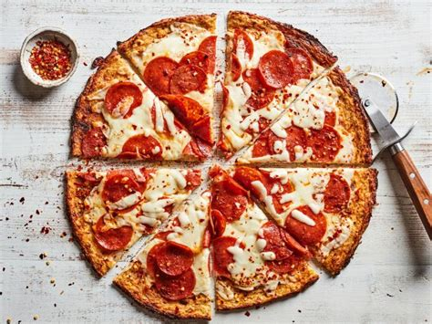

Pizza

A dish made typically of flattened bread dough spread with a savory mixture usually including tomatoes and cheese and often other toppings and baked
Pizza is a dish of Italian origin consisting of a usually round, flat base of leavened wheat-based dough topped with tomatoes, cheese, and often various other ingredients, which is then baked at a high temperature, traditionally in a wood-fired oven.
Ingredients
- 1¼ cups warm water
- 1 teaspoon active dry yeast
- 3 cups bread flour
- 1½ teaspoons fine salt
- ¼ cup olive oil, divided
- 1 (28 ounce) can plain crushed tomatoes
- 1 (14 ounce) can pizza sauce (such as Don Peppino®)
- 8 ounces low-moisture whole-milk mozzarella, very thinly sliced
- ¼ cup grated Pecorino Romano cheese
Steps
- Combine water and yeast in a small bowl. Let stand until yeast softens and begins to form a creamy foam, about 5 minutes.
- Combine flour and salt together in the bowl of a stand mixer fitted with a dough hook attachment. Pour in yeast mixture. Knead dough until smooth, about 7 minutes.
- Grease a large bowl lightly with olive oil. Form dough into a tight ball and lightly grease the top. Place in the bowl; cover loosely with plastic wrap. Let rise until doubled in volume, about 30 minutes.
- Mix crushed tomatoes and pizza sauce together in a bowl to make sauce.
- Grease a heavy-gauge rimmed 12x17-inch baking sheet generously with olive oil. Press dough into the bottom. Prick dough all over with a fork. Arrange mozzarella cheese slices over dough; cover with 1 cup sauce. Sprinkle Pecorino Romano cheese on top. Drizzle remaining olive oil over pizza.
- Let pizza rise in a warm area until puffy, about 1 hour.
- Preheat oven to 450 degrees F (230 degrees C).
- Bake pizza on the center rack of the preheated oven until edges are very dark brown but top is not burnt, 15 to 20 minutes. Cool in the pan for 5 minutes before slicing into squares.